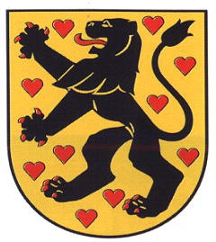

2044012379 Grevinnan Sophie von Orlamunde
Grevinna av Weimar och Orlamunde. Blev ca 64 år.

Far:
Mor:
Född:
omkring 1180 Orlamunde, Thyringen, Tyskland.
Död:
1244 Erfurth, Thyringen, Tyskland.
Barn:
Personhistoria
1180?
Födelse omkring 1180 Orlamunde, Thyringen, Tyskland
1244
Död 1244 Erfurth, Thyringen, Tyskland
Källor
[1]
Skeel, Schaffalitzky og Ahlefeldt